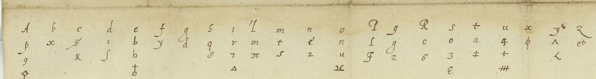
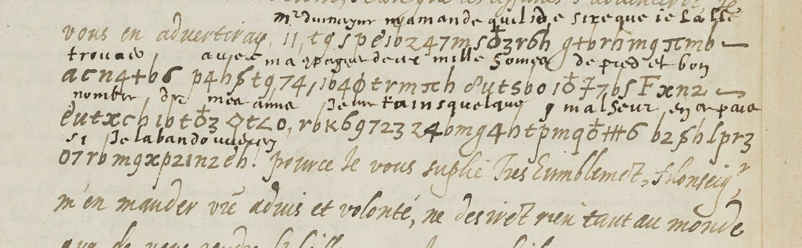
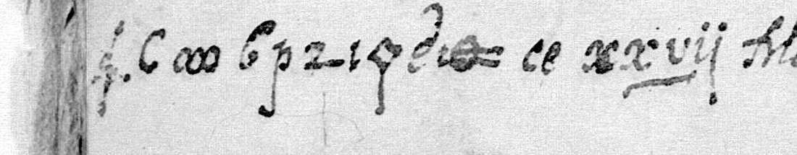
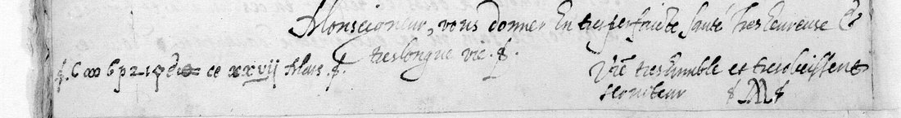

At a glanceExternal key matched · complete
- The letter
- Two letters in clear French to the Duke of Nevers, 27 March and 4 April 1587, from a correspondent at Randan in Auvergne, reporting on a journey to Lyon.
- Where
- BnF fr. 3975 ff. 28 and 30 (Nevers papers, 1587); DECODE R4285 and R4286, catalogued from an unknown sender “at Rome” with the cipher contents unknown.
- The cipher
- Only a little is ciphered: four code numbers, a ten-sign place name in the first dateline and a thirteen-sign run in the second.
- How it was read
- Glosses of the time matched key no. 11 of Nevers’s key book (BnF fr. 3995 f. 23). A third letter from Clermont in fr. 3413, with an interlinear decipherment, showed how this writer draws the key.
- What it says
- The run reads “passant pres Lyon et ce pais”, the first letter is dated “De Randan”, and the codes stand for the marquis, M. d’Entragues, the queen of Navarre and the duc d’Épernon.
- Still open
- One sign between a null and “et” is taken as a null against its key value.
- Credit
- Satoshi Tomokiyo’s catalogue of the Nevers key book, and his note that key no. 11 is used in fr. 3413.
01 The two letters and the key
Fr. 3975 is a volume of the Nevers papers for 1587 in the Collection Mémoires de la Ligue, on Gallica as btv1b90605473. The BnF’s piece-by-piece notice lists f. 28 as no. 7, “Lettre avec chiffrement et déchiffrement adressée à M. le duc de Nevers pour lui rendre compte d’un voyage à Lyon. Ce XXVII mars 1587”, and f. 30 as no. 8, “Lettre adressée par le même correspondant et sur le même sujet”, 4 April. Both are signed with the same monogram and written in a hand that fills its line ends with a long s. Nothing on the leaves says where the writer was. DECODE’s “Rome” seems to be borrowed from a neighbouring piece (no. 13, the marquis Malatesta, Di Roma).
- f. 28r–v, 27 March (R4285): code numbers 94, 6 and 23, each followed by the key’s virgule, and a ten-symbol place name before the clear “ce xxvij Mars”.
- f. 30r, 4 April (R4286): code 45 and one run of thirteen symbols. A contemporary hand glossed the code and the first four symbols of the run.

The key is no. 11 in Tomokiyo’s catalogue of the Nevers key book, BnF fr. 3995 f. 23 (Gallica btv1b525085665, view 52). It has a homophonic alphabet of two to four symbols per letter, capitals for twenty-two small words (C = de, F = et, K = me, M = avec…), and some hundred names and words written as a figure or letter followed by a virgule. The instruction on the sheet: “L’on pourra se servir de toutes sortes de caractaires que l’on voudra faire a plaisir avec ceulx qui sont dans ce chiffre, lesquelz serviront de nulles”, so invented symbols are nulls. The name list leans south and to Auvergne: St Vidal, Mandelot, Maugiron, Randan, the grand prieur, the comte de Sault, the bishop of Clermont. The full table is in targets/nevers1587/key.md.

02 The glossed letter from Clermont
Applied directly from the table, the key decoded the codes and the glossed Lyon (π ^ ꭓ é = l y o n). The rest gave no sense: “… a p c e t a i s”, and a dateline of “r a q …”. Enumerating every value and null against a French language model, and allowing one or two scribal slips, produced nothing convincing.
Tomokiyo notes that key no. 11 “is used in a letter of Cardinal of Guise to the Duke of Nevers, Clairmont, 25 February”, BnF fr. 3413 f. 102 (Gallica btv1b52510705j, view 213). It is not the cardinal’s. It has the same hand, the same long-s line fillers and the same monogram as the two letters in fr. 3975, and it is dated in clear “De Clairmont ce xxv feb”. It reports the Gevaudan Huguenots’ raids and the King’s order to St Vidal to prepare the sieges of Marvejols and Le Malzieu (Joyeuse took both in August 1586, so the letter is of February 1586). It has five lines of cipher with a decipherment written between them: “Mr du Mayne m’a mandé qu’il desire que je l’aille trouver avec ma compagnie, deux mille hommes de pied et bon nombre de ma cavalerie … si je l’abandonnois”.

Aligned with its gloss, that block gives this writer’s version of the key:
| gloss | cipher | what it shows |
|---|---|---|
| m’a mandé | t 9 ʃ ƥ é 1 0 | the d-sign i is written as a dotted 1 |
| qu’il desire que | z 4 7 m · 5 ⊕ 3 r 6 h · g + b | ⊕ (the key’s ♀) = e; 5 = d |
| de pied | 1 ⊕ Ŧ 7 6 5 | Ŧ = p, the key’s script F |
| et bon | F x n 2 | capital F = “et” |
| si je l’abandonn[ois] | 0 7 · r b · m 9 x ƥ 2 1 n 2 é… | 0 = s; his 2 and z are one shape |
03 The decipherment
4 April, f. 30r. The run divides π ^ ꭓ é | ∞ ƥ | F | ƨ h | Ŧ ◊ 7 o = Lyon · two nulls · et · ce · pais:
“45 [le duc d’Espernon] a esté en tres grande alarme, passant pres Lyon et ce pais, et sans aucun subject, car je vous puis asseurer qu’on n’a jamais songé de luy faire desplaisir; ce sont les charités qu’on preste en ce temps cy, lesquelles, je m’asseure, tomberont sur les inventeurs, car la verité, si elle ne l’est desja, sera bien tost cogneue.”
(“The duc d’Épernon was in very great alarm passing near Lyon and this country, and without any cause, for I can assure you no one ever thought of doing him harm; these are the charities people lend one another these days, which will fall on their inventors.”) The letter opens with Nevers’s laquais sent back, the duke having gone to Chenonceau “jusqu’apres de Pasques” and now happily returned to Paris.
27 March, f. 28. The writer answers Nevers’s question about a journey he made to Lyon. He went on private business. Tournon and St Vidal were there with the bishop of Le Puy to settle the war in the Vivarais with Mandelot, and
“en ce temps mesme 94 [le marquis] y arriva, qui vendit une terre a 6 [M. d’Entragues], dont ils s’estoient remis a mons. de Lyon pour le marché … Pour ce qui est de 23 [la reine de Navarre], je ne m’en suis voulu jamais mesler … je sçay combien je doibs de respect en ces lieux la.”
The dateline, C | ∞ | 6 ƥ z ι ◊ é | ι ⊕, deciphers as C = “de”, ∞ a null, then r a n d a n: “De Randan, ce xxvij Mars”. The last two symbols would give “de”; they are a false start: the ⊕ is a pale blot with a double stroke through it. The writer began the date in cipher, cancelled it, and wrote “ce xxvij Mars” in clear. Randan, north-east of Clermont, was the seat of Jean-Louis de La Rochefoucauld, comte de Randan, governor of Auvergne. Marguerite de Valois, the “23” of the letter, was then held at Usson, in the same province.


C ∞ 6 ƥ z ι ◊ é ι ⊕ = de [·] Randan and a struck-out false start, then ce xxvij Mars in clear. Image: Bibliothèque nationale de France, fr. 3975 f. 28v, via Gallica (btv1b90605473).Both letters in full, with the cipher resolved, are in targets/nevers1587/reading.md. The decoder dec.py writes the symbol-by-symbol decipherment to reading.tsv.
04 Who wrote
No name appears on the leaves. The three letters show a man who writes from Clermont and from Randan. He keeps a company and cavalry of his own, and Mayenne asks him to bring two thousand foot. He had asked the King for leave to keep horse against the Gevaudan Huguenots. He stays well clear of the queen of Navarre’s affairs, and he hopes to wait on Nevers at Nevers. That fits the comte de Randan, the League governor of Auvergne (killed before Issoire in 1590), and he is the obvious candidate. The key lists “Mr de Randan” as 8, though, and nothing on the leaves names him, so the page calls him a correspondent at Randan. “94, le marquis” in Auvergne that spring is probably the marquis de Canillac, Marguerite’s keeper at Usson, who had gone over to her that winter. That is context, not proof.
05 What remains uncertain
- The four codes (94, 6, 23, 45): grade H, from the key’s list; 45 also glossed at the time.
- Lyon (4 symbols) and et ce pais (6 units): H. ∞ is a null by the key’s own rule, since it is not in the table.
- The symbol ƥ after ∞ in the run: the key’s a, but “Lyon a et ce pais” is not French. It is taken as a null (M).
- Randan (6 symbols): H for the letters. z is the key’s q, but this writer’s z and 2 (n) are one shape. The last two symbols of the dateline, ι ⊕, are a struck-out false start (C): at full resolution the ⊕ is pale and crossed by a double stroke.
Measured on reading.tsv: 27 cipher units. 26 are accounted for (0.963): 22 letters, words and codes, 3 nulls and 2 struck-out symbols. The one doubtful symbol, the ƥ in the run, is a single occurrence with nothing to test it against.
Full texts
The transcription and the decryption of every document on this page, so that the reading can be used and checked. Short files are shown here; all are in the repository.
Randan, 27 March 1587, f. 28r-v (DECODE R4285)
A correspondent at Randan in Auvergne, probably the comte de Randan, answers the duc de Nevers that he went to Lyon on private business while Tournon, St Vidal and the bishop of Le Puy met Mandelot about the war in Vivarais; 94 (le marquis) sold an estate there to 6 (M. d'Entragues), and he has never meddled in the affairs of 23 (the reine de Navarre). The cipher items are three code numbers and the dateline 'De Randan'; the letter is otherwise clear.
Transcription
# Cipher items in BnF fr. 3975 ff. 28 and 30, one sign per space-separated token.
# Code numbers carry the key's virgule in the letters ("94," "6,"); it is dropped here.
# Glyphs: see key.md. Transcribed 22 Sept 2026 from Gallica btv1b90605473 canvases 52, 53, 56 (full resolution).
R4285 f28r code 94
R4285 f28r code 6
R4285 f28r code 23
R4285 f28v dateline C ∞ 6 ƥ z ι ◊ é ι ⊕
R4286 f30r code 45
R4286 f30r run π ^ ꭓ é ∞ ƥ F ƨ h Ŧ ◊ 7 oDecryption
# Reading: BnF fr. 3975 ff. 28 and 30 Working transcription from the Gallica scans (canvases 52, 53, 56), 22 Sept 2026. Spelling kept, abbreviations expanded silently, punctuation light. Cipher items in **bold** with their reading in brackets; [?] marks a doubtful clear word. ## f. 28r–v (DECODE R4285): 27 March 1587, from Randan Docket at the head: *27 de Mars 1587*. Monseigneur, j'ay receu par ce laquay la lettre qu'il vous a pleu m'escrire, recevant trop d'honneur de la continuation de voz bonnes graces, desquelles vous ne rendrez jamais digne un plus obeissant serviteur que je le vous suis. Je loue Dieu de vostre heureux retour, et doublement pour l'esperance qu'il me donne que vous viendrez pour quelques jours a Nevers, ou j'auray cest honneur de vous aller tres humblement baiser les mains. Et pour respondre a ce qu'il vous plaist me mander, je vous diray que si j'eusse pensé que le voyage que je fis a Lyon eust merité de vous en donner advis, je l'eusse faict, et vous supplie tres humblement de croyre que j'y allé pour mes affaires particulieres. Bien y estoient messrs de Tournon et St Vidal avec monsr l'Evesque du Puy pour resouldre avec monsr de Mandelot et les gens de sa charge sur l'occasion de la guerre en Vivarez, de la façon que les deputés en allerent demander la permission au Roy; et en ce temps mesme **94,** [le marquis] y arriva, qui vendit une terre a **6,** [M. d'Entragues], dont ils s'estoient remis a monsr de Lyon pour le marché: voila ce qui s'y fist, qui ne m'a semblé digne de vous en importuner. Pour ce qui est de **23** [la reine de Navarre], je ne m'en suis voulu jamais mesler, et vous supplie tres humblement de le croyre; je sçay combien je doibs de respect en ces lieux la, et pource les honore sans m'en entremettre davantage. Pour ce | qui est de ce dont il vous a pleu, Monseigneur, vouloir prendre trop de peyne pour moy, il y a quelques jours [?], ce n'est des lors ny cest heure que je recognois les tres grandes obligations que je vous ay, mais de tout temps, me faisant trop d'honneur de m'aymer comme je le sçay; pource librement je vous diray que resolution aulcune je ne puis faire en ce faict sans avoir cest heur que de vous entretenir une heure, et cependant je vous requiers en toute humilité de laisser les choses comme elles sont. Dieu, s'il luy plaist, me conservera tel que je doibs estre, et rendra plus fortuné que je n'ay esté jusques a ceste heure; et quel que je soys, je ne diray avec verité [que] vostre tres fidelle serviteur, vous suppliant tres humblement pour tel m'aymer tousjours et conserver en voz bonnes graces, lesquelles saluant avec toute humilité, je suppliray Dieu, Monseigneur, vous donner en tres parfaicte santé tres heureuse et tres longue vie. **C ∞ 6 ƥ z ι ◊ é** [de · null · Randan] ~~ι ⊕~~ [a false start, 'de', struck through], ce xxvij Mars. Vostre tres humble et tres obeissant serviteur [monogram]. ## f. 30r (DECODE R4286): 4 April 1587 Docket at the head: *4 d'avril 1587*. Two interlinear glosses in another hand: *Le duc d'Espernon* over 45, *Lyon* under the first four signs of the run. Monseigneur, je vous ay renvoyé le laquay qu'il vous a pleu me depescher, lequel je croy n'aura si tost esté vers vous, pour vous estre allé chercher a Chenonceau, ou vous me mandiez que demeureriez jusqu'apres de Pasques; et espere doresnavant amender la faulte que j'ay faict de ne vous faire sçavoir des nouvelles de ces quartiers, mais il m'estoit quasi impossible, veu la distance des lieux et l'incertitude en laquelle j'estois de vostre sejour. Je loue Dieu de vostre heureux retour a Paris, et le supplie me faire la grace de vous pouvoir autant tesmoigner par digne effect le tres fidelle service que je vous doibs et ay voué, que j'en ay d'obligation et immortelle volonté. **45,** [le duc d'Espernon] a esté en tres grande alarme, passant pres **π ^ ꭓ é ∞ ƥ F ƨ h Ŧ ◊ 7 o** [Lyon · null null · et · ce · pais], et sans aucun subject, car je vous puis asseurer qu'on n'a jamais songé de luy faire desplaisir; ce sont les charités qu'on preste en ce temps cy, lesquelles, je m'asseure, tomberont sur les inventeurs, car la verité, si elle ne l'est desja, sera bien tost cogneue: c'est tout ce que je sçay qui merite vous estre escript, Monseigneur, et pource vous suppliant tres humblement m'honorer tousjours de voz bonnes graces comme vostre tres obeissant serviteur, je vous baiseray en toute humilité les mains, avec supplication a Dieu, Monseigneur, qu'il vous donne en tres parfaicte santé tres heureuse vie. Ce iiij apvril 1587. Vostre tres humble et tres obeissant serviteur [monogram]. ## Translation of the cipher-bearing sentences * f. 28r: "and at that very time the marquis arrived there, who sold an estate to M. d'Entragues, for whose price they had left it to the archbishop of Lyon … As for the queen of Navarre, I have never wished to meddle in it." * f. 28v: "From Randan, this 27th of March." * f. 30r: "The duc d'Épernon was in very great alarm passing near Lyon and this country, and without any cause, for I can assure you no one ever thought of doing him harm; these are the charities people lend one another these days, which, I am sure, will fall on their inventors."
Decryption
record folio item sign value class R4285 f28r code 94 le marquis code R4285 f28r code 6 M. d'Entragues code R4285 f28r code 23 la reine de Navarre code R4285 f28v dateline C de word R4285 f28v dateline ∞ null R4285 f28v dateline 6 r letter R4285 f28v dateline ƥ a letter R4285 f28v dateline z n letter R4285 f28v dateline ι d letter R4285 f28v dateline ◊ a letter R4285 f28v dateline é n letter R4285 f28v dateline ι d cancelled R4285 f28v dateline ⊕ e cancelled R4286 f30r code 45 le duc d'Espernon code R4286 f30r run π l letter R4286 f30r run ^ y letter R4286 f30r run ꭓ o letter R4286 f30r run é n letter R4286 f30r run ∞ null R4286 f30r run ƥ null R4286 f30r run F et word R4286 f30r run ƨ c letter R4286 f30r run h e letter R4286 f30r run Ŧ p letter R4286 f30r run ◊ a letter R4286 f30r run 7 i letter R4286 f30r run o s letter
Translation
# BnF fr. 3975 ff. 28 and 30: letters to the duc de Nevers, 27 March and 4 April 1587: English translation Translation (Claude Opus 5.5, 23 Oct 2026) of the whole of `reading.md`: two clear letters with code items in **bold** (their readings in brackets, as there). Same marks: `[?]` a doubtful clear word, `[que]` a word supplied. The f. 28 section translates entry f28, the f. 30 section entry f30. French. ## f. 28r-v (DECODE R4285): 27 March 1587, from Randan Monseigneur, I have received by this lackey the letter it pleased you to write me, receiving too much honour from the continuation of your good graces, of which you will never make worthy a more obedient servant than I am to you. I praise God for your happy return, and doubly for the hope it gives me that you will come for some days to Nevers, where I shall have the honour of going to kiss your hands very humbly. And to answer what you are pleased to send me, I will tell you that, if I had thought that the journey I made to Lyon deserved to be reported to you, I would have done so; and I beg you very humbly to believe that I went there on my private affairs. Indeed Messieurs de Tournon and St Vidal were there, with Monsieur the Bishop of Le Puy, to settle with Monsieur de Mandelot and the people of his charge on the occasion of the war in Vivarais, the way in which the deputies went to ask the King's permission; and at that very time **94** [the marquis] arrived there, who sold an estate to **6** [M. d'Entragues], for the bargain of which they had referred themselves to Monsieur of Lyon: that is what was done there, which did not seem to me worthy of troubling you with. As for what concerns **23** [the Queen of Navarre], I have never wished to meddle with it, and beg you very humbly to believe so; I know how much respect I owe in those quarters, and therefore I honour them without involving myself further. As for that, Monseigneur, about which it pleased you to want to take too much trouble for me some days ago [?], it is not from then nor from this hour that I recognise the very great obligations I have to you, but from all time, you doing me too much honour in loving me, as I know; therefore I will tell you freely that I can make no resolution in this matter without having the good fortune to talk with you for an hour, and meanwhile I beg you in all humility to leave things as they are. God, if it please Him, will keep me such as I ought to be, and make me more fortunate than I have been until this hour; and whatever I am, I shall say with truth [only] that I am your very faithful servant, begging you very humbly always to love me as such and keep me in your good graces, which I salute with all humility, praying God, Monseigneur, to give you in very perfect health a very happy and very long life. **C ∞ 6 ƥ z ι ◊ é** [From · null · Randan] ~~ι ⊕~~ [a false start, struck through], this 27th of March. Your very humble and very obedient servant [monogram]. ## f. 30r (DECODE R4286): 4 April 1587 Monseigneur, I have sent back to you the lackey you were pleased to despatch to me, who I think will not have reached you so soon, having gone to look for you at Chenonceau, where you sent me word you would stay until after Easter; and I hope henceforth to amend the fault I have committed in not letting you know the news of these parts; but it was almost impossible for me, given the distance of the places and the uncertainty I was in about your stay. I praise God for your happy return to Paris, and beg Him to grant me the grace of being able to show you by worthy effect the very faithful service I owe and have vowed to you, as much as I have obligation and undying will to do so. **45** [the Duc d'Épernon] has been in very great alarm passing near **π ^ ꭓ é ∞ ƥ F ƨ h Ŧ ◊ 7 o** [Lyon · null null · and · this · country], and without any cause, for I can assure you no one ever thought of doing him displeasure; these are the charities people lend one another in these times, which, I am sure, will fall back on their inventors, for the truth, if it is not already, will very soon be known. That is all I know that deserves to be written to you, Monseigneur; and therefore, begging you very humbly always to honour me with your good graces as your very obedient servant, I will kiss your hands in all humility, with prayer to God, Monseigneur, that He give you in very perfect health a very happy life. This 4th of April 1587. Your very humble and very obedient servant [monogram].
4 April 1587, f. 30r (DECODE R4286)
The same correspondent reports that 45 (the duc d'Espernon) was in great alarm passing near Lyon and that country, without any cause, since no one ever thought of doing him harm. Clear French with one code and one 13-sign run.
Transcription
# Cipher items in BnF fr. 3975 ff. 28 and 30, one sign per space-separated token.
# Code numbers carry the key's virgule in the letters ("94," "6,"); it is dropped here.
# Glyphs: see key.md. Transcribed 22 Sept 2026 from Gallica btv1b90605473 canvases 52, 53, 56 (full resolution).
R4285 f28r code 94
R4285 f28r code 6
R4285 f28r code 23
R4285 f28v dateline C ∞ 6 ƥ z ι ◊ é ι ⊕
R4286 f30r code 45
R4286 f30r run π ^ ꭓ é ∞ ƥ F ƨ h Ŧ ◊ 7 oDecryption
# Reading: BnF fr. 3975 ff. 28 and 30 Working transcription from the Gallica scans (canvases 52, 53, 56), 22 Sept 2026. Spelling kept, abbreviations expanded silently, punctuation light. Cipher items in **bold** with their reading in brackets; [?] marks a doubtful clear word. ## f. 28r–v (DECODE R4285): 27 March 1587, from Randan Docket at the head: *27 de Mars 1587*. Monseigneur, j'ay receu par ce laquay la lettre qu'il vous a pleu m'escrire, recevant trop d'honneur de la continuation de voz bonnes graces, desquelles vous ne rendrez jamais digne un plus obeissant serviteur que je le vous suis. Je loue Dieu de vostre heureux retour, et doublement pour l'esperance qu'il me donne que vous viendrez pour quelques jours a Nevers, ou j'auray cest honneur de vous aller tres humblement baiser les mains. Et pour respondre a ce qu'il vous plaist me mander, je vous diray que si j'eusse pensé que le voyage que je fis a Lyon eust merité de vous en donner advis, je l'eusse faict, et vous supplie tres humblement de croyre que j'y allé pour mes affaires particulieres. Bien y estoient messrs de Tournon et St Vidal avec monsr l'Evesque du Puy pour resouldre avec monsr de Mandelot et les gens de sa charge sur l'occasion de la guerre en Vivarez, de la façon que les deputés en allerent demander la permission au Roy; et en ce temps mesme **94,** [le marquis] y arriva, qui vendit une terre a **6,** [M. d'Entragues], dont ils s'estoient remis a monsr de Lyon pour le marché: voila ce qui s'y fist, qui ne m'a semblé digne de vous en importuner. Pour ce qui est de **23** [la reine de Navarre], je ne m'en suis voulu jamais mesler, et vous supplie tres humblement de le croyre; je sçay combien je doibs de respect en ces lieux la, et pource les honore sans m'en entremettre davantage. Pour ce | qui est de ce dont il vous a pleu, Monseigneur, vouloir prendre trop de peyne pour moy, il y a quelques jours [?], ce n'est des lors ny cest heure que je recognois les tres grandes obligations que je vous ay, mais de tout temps, me faisant trop d'honneur de m'aymer comme je le sçay; pource librement je vous diray que resolution aulcune je ne puis faire en ce faict sans avoir cest heur que de vous entretenir une heure, et cependant je vous requiers en toute humilité de laisser les choses comme elles sont. Dieu, s'il luy plaist, me conservera tel que je doibs estre, et rendra plus fortuné que je n'ay esté jusques a ceste heure; et quel que je soys, je ne diray avec verité [que] vostre tres fidelle serviteur, vous suppliant tres humblement pour tel m'aymer tousjours et conserver en voz bonnes graces, lesquelles saluant avec toute humilité, je suppliray Dieu, Monseigneur, vous donner en tres parfaicte santé tres heureuse et tres longue vie. **C ∞ 6 ƥ z ι ◊ é** [de · null · Randan] ~~ι ⊕~~ [a false start, 'de', struck through], ce xxvij Mars. Vostre tres humble et tres obeissant serviteur [monogram]. ## f. 30r (DECODE R4286): 4 April 1587 Docket at the head: *4 d'avril 1587*. Two interlinear glosses in another hand: *Le duc d'Espernon* over 45, *Lyon* under the first four signs of the run. Monseigneur, je vous ay renvoyé le laquay qu'il vous a pleu me depescher, lequel je croy n'aura si tost esté vers vous, pour vous estre allé chercher a Chenonceau, ou vous me mandiez que demeureriez jusqu'apres de Pasques; et espere doresnavant amender la faulte que j'ay faict de ne vous faire sçavoir des nouvelles de ces quartiers, mais il m'estoit quasi impossible, veu la distance des lieux et l'incertitude en laquelle j'estois de vostre sejour. Je loue Dieu de vostre heureux retour a Paris, et le supplie me faire la grace de vous pouvoir autant tesmoigner par digne effect le tres fidelle service que je vous doibs et ay voué, que j'en ay d'obligation et immortelle volonté. **45,** [le duc d'Espernon] a esté en tres grande alarme, passant pres **π ^ ꭓ é ∞ ƥ F ƨ h Ŧ ◊ 7 o** [Lyon · null null · et · ce · pais], et sans aucun subject, car je vous puis asseurer qu'on n'a jamais songé de luy faire desplaisir; ce sont les charités qu'on preste en ce temps cy, lesquelles, je m'asseure, tomberont sur les inventeurs, car la verité, si elle ne l'est desja, sera bien tost cogneue: c'est tout ce que je sçay qui merite vous estre escript, Monseigneur, et pource vous suppliant tres humblement m'honorer tousjours de voz bonnes graces comme vostre tres obeissant serviteur, je vous baiseray en toute humilité les mains, avec supplication a Dieu, Monseigneur, qu'il vous donne en tres parfaicte santé tres heureuse vie. Ce iiij apvril 1587. Vostre tres humble et tres obeissant serviteur [monogram]. ## Translation of the cipher-bearing sentences * f. 28r: "and at that very time the marquis arrived there, who sold an estate to M. d'Entragues, for whose price they had left it to the archbishop of Lyon … As for the queen of Navarre, I have never wished to meddle in it." * f. 28v: "From Randan, this 27th of March." * f. 30r: "The duc d'Épernon was in very great alarm passing near Lyon and this country, and without any cause, for I can assure you no one ever thought of doing him harm; these are the charities people lend one another these days, which, I am sure, will fall on their inventors."
Decryption
record folio item sign value class R4285 f28r code 94 le marquis code R4285 f28r code 6 M. d'Entragues code R4285 f28r code 23 la reine de Navarre code R4285 f28v dateline C de word R4285 f28v dateline ∞ null R4285 f28v dateline 6 r letter R4285 f28v dateline ƥ a letter R4285 f28v dateline z n letter R4285 f28v dateline ι d letter R4285 f28v dateline ◊ a letter R4285 f28v dateline é n letter R4285 f28v dateline ι d cancelled R4285 f28v dateline ⊕ e cancelled R4286 f30r code 45 le duc d'Espernon code R4286 f30r run π l letter R4286 f30r run ^ y letter R4286 f30r run ꭓ o letter R4286 f30r run é n letter R4286 f30r run ∞ null R4286 f30r run ƥ null R4286 f30r run F et word R4286 f30r run ƨ c letter R4286 f30r run h e letter R4286 f30r run Ŧ p letter R4286 f30r run ◊ a letter R4286 f30r run 7 i letter R4286 f30r run o s letter
Translation
# BnF fr. 3975 ff. 28 and 30: letters to the duc de Nevers, 27 March and 4 April 1587: English translation Translation (Claude Opus 5.5, 23 Oct 2026) of the whole of `reading.md`: two clear letters with code items in **bold** (their readings in brackets, as there). Same marks: `[?]` a doubtful clear word, `[que]` a word supplied. The f. 28 section translates entry f28, the f. 30 section entry f30. French. ## f. 28r-v (DECODE R4285): 27 March 1587, from Randan Monseigneur, I have received by this lackey the letter it pleased you to write me, receiving too much honour from the continuation of your good graces, of which you will never make worthy a more obedient servant than I am to you. I praise God for your happy return, and doubly for the hope it gives me that you will come for some days to Nevers, where I shall have the honour of going to kiss your hands very humbly. And to answer what you are pleased to send me, I will tell you that, if I had thought that the journey I made to Lyon deserved to be reported to you, I would have done so; and I beg you very humbly to believe that I went there on my private affairs. Indeed Messieurs de Tournon and St Vidal were there, with Monsieur the Bishop of Le Puy, to settle with Monsieur de Mandelot and the people of his charge on the occasion of the war in Vivarais, the way in which the deputies went to ask the King's permission; and at that very time **94** [the marquis] arrived there, who sold an estate to **6** [M. d'Entragues], for the bargain of which they had referred themselves to Monsieur of Lyon: that is what was done there, which did not seem to me worthy of troubling you with. As for what concerns **23** [the Queen of Navarre], I have never wished to meddle with it, and beg you very humbly to believe so; I know how much respect I owe in those quarters, and therefore I honour them without involving myself further. As for that, Monseigneur, about which it pleased you to want to take too much trouble for me some days ago [?], it is not from then nor from this hour that I recognise the very great obligations I have to you, but from all time, you doing me too much honour in loving me, as I know; therefore I will tell you freely that I can make no resolution in this matter without having the good fortune to talk with you for an hour, and meanwhile I beg you in all humility to leave things as they are. God, if it please Him, will keep me such as I ought to be, and make me more fortunate than I have been until this hour; and whatever I am, I shall say with truth [only] that I am your very faithful servant, begging you very humbly always to love me as such and keep me in your good graces, which I salute with all humility, praying God, Monseigneur, to give you in very perfect health a very happy and very long life. **C ∞ 6 ƥ z ι ◊ é** [From · null · Randan] ~~ι ⊕~~ [a false start, struck through], this 27th of March. Your very humble and very obedient servant [monogram]. ## f. 30r (DECODE R4286): 4 April 1587 Monseigneur, I have sent back to you the lackey you were pleased to despatch to me, who I think will not have reached you so soon, having gone to look for you at Chenonceau, where you sent me word you would stay until after Easter; and I hope henceforth to amend the fault I have committed in not letting you know the news of these parts; but it was almost impossible for me, given the distance of the places and the uncertainty I was in about your stay. I praise God for your happy return to Paris, and beg Him to grant me the grace of being able to show you by worthy effect the very faithful service I owe and have vowed to you, as much as I have obligation and undying will to do so. **45** [the Duc d'Épernon] has been in very great alarm passing near **π ^ ꭓ é ∞ ƥ F ƨ h Ŧ ◊ 7 o** [Lyon · null null · and · this · country], and without any cause, for I can assure you no one ever thought of doing him displeasure; these are the charities people lend one another in these times, which, I am sure, will fall back on their inventors, for the truth, if it is not already, will very soon be known. That is all I know that deserves to be written to you, Monseigneur; and therefore, begging you very humbly always to honour me with your good graces as your very obedient servant, I will kiss your hands in all humility, with prayer to God, Monseigneur, that He give you in very perfect health a very happy life. This 4th of April 1587. Your very humble and very obedient servant [monogram].
06 Sources
- BnF Français 3975 ff. 28–31, Gallica btv1b90605473, views 52–58; DECODE R4285, R4286.
- Key: BnF Français 3995 f. 23, Gallica btv1b525085665, view 52; S. Tomokiyo, “Catalogue of Ciphers (Mainly Related to Duke of Nevers) in BnF fr. 3995”, cryptiana.web.fc2.com, no. 11.
- Sibling: BnF Français 3413 f. 102, Gallica btv1b52510705j, view 213.
- BnF, Archives et manuscrits, notice of the Collection Mémoires de la Ligue (cc504266), fr. 3975 nos. 7–8.
- Checked without result: Tomokiyo’s league.htm (fr. 3975: no cipher listed); Les mémoires de M. le duc de Nevers (1665), Gallica full text.
Transcription, key table, decoder and notes: targets/nevers1587/ in the repository.